¿Quiénes somos?
ON Soporte Informático es una empresa comprometida
con brindar soluciones tecnológicas integrales, adaptadas a las
necesidades de cada cliente. Con una trayectoria respaldada por la
experiencia y la pasión por la tecnología, nos dedicamos a ofrecer
servicios de
reparación y mantenimiento de equipos informáticos,
impresión 3D,
venta de productos tecnológicos y
desarrollo de sistemas a medida.
Nuestro objetivo es ser el aliado tecnológico de empresas,
profesionales y particulares que buscan eficiencia, calidad y atención
personalizada. Sabemos lo importante que es contar con equipos
funcionando correctamente y soluciones digitales que acompañen el
crecimiento de cada proyecto. Por eso, trabajamos con responsabilidad,
rapidez y un fuerte enfoque en la innovación.
Servicios
-
🔧 Reparación y mantenimiento de equipos informáticos
Brindamos soporte técnico para computadoras, notebooks, redes y
periféricos. Realizamos diagnósticos precisos, mantenimientos
preventivos y correctivos, actualizaciones y configuraciones.
Nuestro enfoque es prolongar la vida útil de tus dispositivos y
garantizar un rendimiento óptimo.
-
🧩 Desarrollo de sistemas a medida
Diseñamos e implementamos soluciones digitales pensadas
específicamente para cada necesidad. Desde sistemas de gestión
hasta plataformas personalizadas, desarrollamos software
funcional, escalable y adaptable a distintos entornos, optimizando
los procesos de tu negocio.
-
🛒 Venta de productos tecnológicos
Ofrecemos una amplia variedad de productos seleccionados con
criterios de calidad y rendimiento: computadoras, notebooks,
accesorios, periféricos, componentes y más. Asesoramos a nuestros
clientes para que realicen compras inteligentes, ajustadas a sus
objetivos y presupuestos.
-
🖨️ Impresión 3D
Incorporamos la tecnología de impresión 3D para llevar las ideas a
la realidad. Realizamos prototipos, piezas personalizadas,
soluciones creativas y funcionales para distintos sectores. Este
servicio es ideal tanto para desarrolladores como para
particulares que buscan innovación y personalización.
En ON Soporte Informático no solo reparamos o
vendemos, construimos relaciones de confianza basadas en el
compromiso, la responsabilidad y la mejora constante. Creemos en el
valor del conocimiento aplicado con criterio, y en la importancia de
brindar un servicio honesto y profesional.
📍 Estamos listos para acompañarte en cada paso de tu camino
tecnológico.
💡 Tu necesidad, nuestra solución.
Servicio Técnico y Reparaciones
En ON Soporte Informático ofrecemos un servicio
técnico completo para computadoras de escritorio, notebooks, redes y
periféricos. Nos especializamos en diagnóstico, mantenimiento
preventivo y correctivo, limpieza interna, cambio de piezas,
instalación de sistemas operativos, recuperación de datos y
optimización del rendimiento.
Contamos con técnicos capacitados y herramientas profesionales que nos
permiten brindarte una solución rápida, segura y confiable. Atendemos
tanto a particulares como a empresas, con atención personalizada y
seguimiento del equipo reparado.
Servicios que ofrecemos:
- 🔧 Reparación de notebooks y computadoras de escritorio
- 🔌 Cambios de módulos, pines de carga y conectores
- 📱 Reparación de celulares y tablets
- 💻 Instalación de sistemas operativos (Windows, Linux, etc.)
- 📦 Instalación de paquete Office y programas esenciales
- 🔓 Desbloqueo de computadoras y teléfonos
- 🛠️ Reballing y trabajos avanzados en placa base
- 🔄 Remanufactura de pantallas y componentes electrónicos
Utilizamos herramientas profesionales y repuestos de calidad, y
trabajamos con responsabilidad para que cada equipo recupere su
funcionalidad en el menor tiempo posible.
Sabemos lo importante que es tu equipo, por eso implementamos un
sistema donde podés
consultar el estado de tu reparación en línea, de
forma cómoda y transparente.
Productos Tecnológicos
En ON Soporte Informático ofrecemos una selección de
productos tecnológicos de calidad. Vendemos notebooks, PCs armadas,
periféricos, insumos, accesorios, dispositivos móviles y más. Cada
producto es cuidadosamente elegido para asegurar rendimiento,
durabilidad y precio justo.
Impresión 3D
En ON Soporte Informático ofrecemos servicios de
impresión 3D de alta precisión, ideales para prototipado, piezas
personalizadas, repuestos, diseño industrial y objetos decorativos.
Trabajamos con filamentos PLA, PETG y otros materiales, y brindamos
asesoramiento desde el diseño hasta la impresión final. Nos adaptamos
tanto a necesidades técnicas como creativas.
Algunos de nuestros trabajos:
Desarrollo de Sistemas y Páginas Web
En ON Soporte Informático desarrollamos soluciones
digitales pensadas para hacer crecer tu negocio. Creamos sistemas a
medida según tus necesidades, ofrecemos sistemas pre-diseñados listos
para usar y también desarrollamos páginas web simples para presencia
online.
🧩 Sistemas a Medida
Desarrollamos sistemas personalizados adaptados al flujo de trabajo de
tu emprendimiento o empresa. Ideal para quienes necesitan una solución
única, eficiente y escalable. Automatizamos procesos, organizamos tu
operación y centralizamos la información en una sola plataforma.
🛠️ Sistemas Pre-Hechos
📦 PriceManager – Sistema de Punto de Venta
PriceManager es un sistema de gestión para negocios
que buscan controlar sus ventas y stock sin necesidad de facturación
electrónica. Es simple, intuitivo y accesible para cualquier tipo de
comercio.
- ✅ Control de productos y stock en tiempo real.
- ✅ Registro de ventas y búsqueda por cliente o producto.
- ✅ Reportes básicos de movimientos.
- ✅ No requiere conexión a Internet permanente.
Es ideal para kioscos, almacenes, ferreterías, librerías y pequeños
negocios que necesitan una herramienta confiable para gestionar su
punto de venta de forma simple.
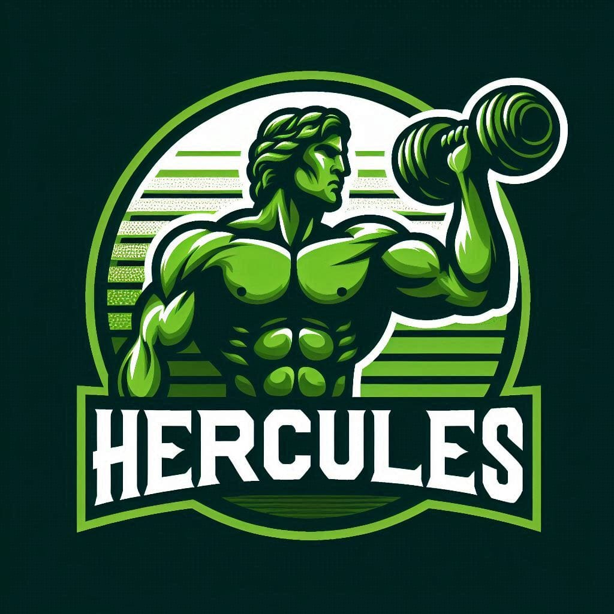
💪 Hercules Gym Manager – Sistema de Gestión de Gimnasios
Hercules Gym Manager está diseñado para facilitar
la administración de gimnasios, boxes de entrenamiento o centros
deportivos. Permite llevar el control de cuotas, asistencia y
rutinas de cada socio.
- ✅ Control de pagos y estado de cuotas.
- ✅ Registro de altas, bajas y suspensiones.
- ✅ Creación y asignación de rutinas personalizadas.
- ✅ Panel claro para gestionar a todos los socios.
Es la solución ideal para mantener la organización en gimnasios y
mejorar la atención a los socios con una gestión más profesional.
🌐 Páginas Web Simples
También desarrollamos páginas web institucionales, catálogos online o
sitios personales. Si querés tener presencia en Internet con una web
clara, moderna y responsive, te ayudamos a dar ese paso.
CBS – Cloud Backup Service
Protección avanzada para tus datos empresariales
En la era digital actual, la información es uno de los activos más
valiosos de una empresa.
ON – Cloud Backup Service ofrece una solución
integral para respaldar y recuperar datos críticos, asegurando la
continuidad del negocio ante cualquier eventualidad.
Características destacadas:
-
📁 Respaldo y recuperación de dispositivos: Compatibilidad con PCs,
Macs, iPhones y dispositivos Android.
-
🖥️ Soporte para servidores: Incluye respaldo de SQL Server, Exchange
y SharePoint Server.
-
🔐 Seguridad de nivel militar: Encriptación AES de 256 bits y
centros de datos certificados.
-
📜 Cumplimiento normativo: HIPAA, Safe Harbor, GLBA, Sarbanes-Oxley.
- 🌍 Acceso global: Desde cualquier lugar vía apps móviles.
📥 Descargas
🖼️ Capturas del sistema
Empresas que confían en nosotros
Estas son algunas de las empresas, comercios y organizaciones que
eligen nuestros servicios.
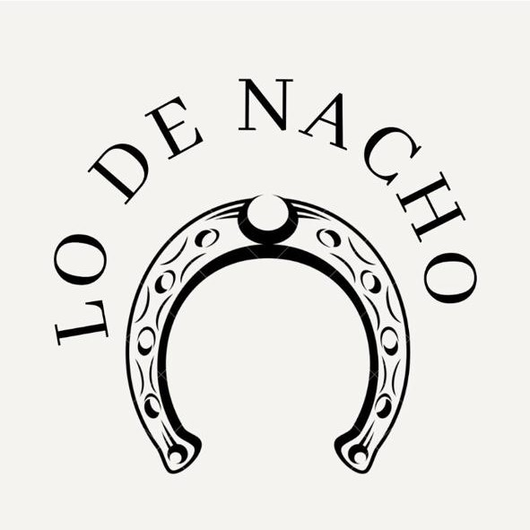
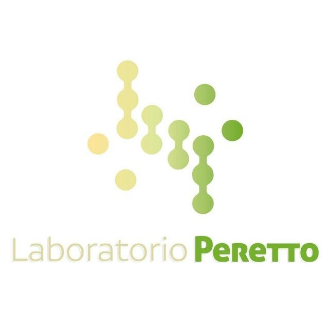
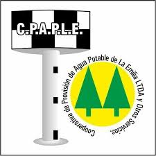
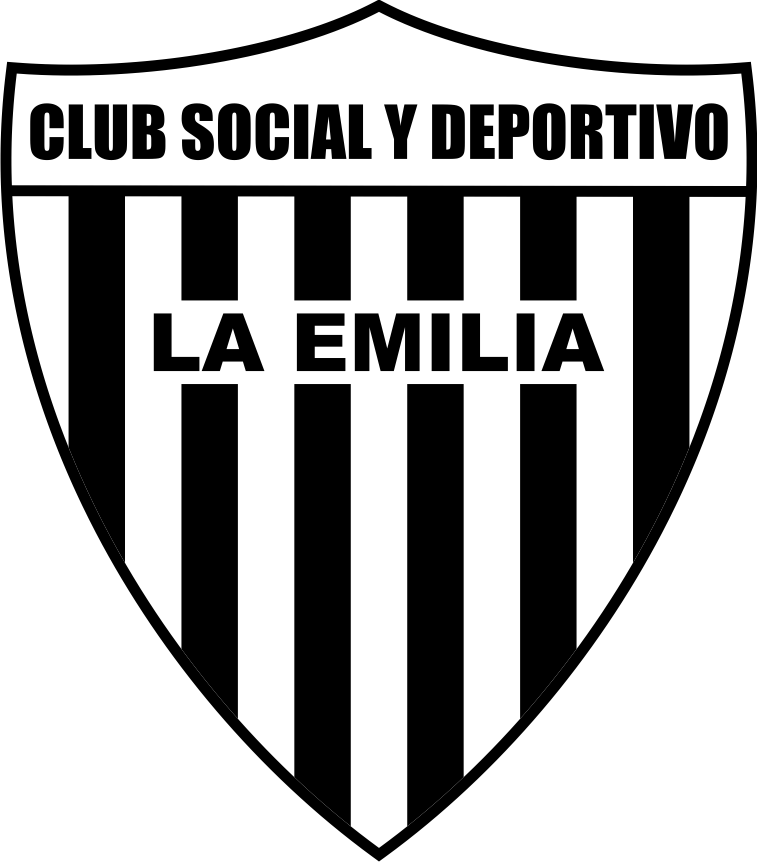


 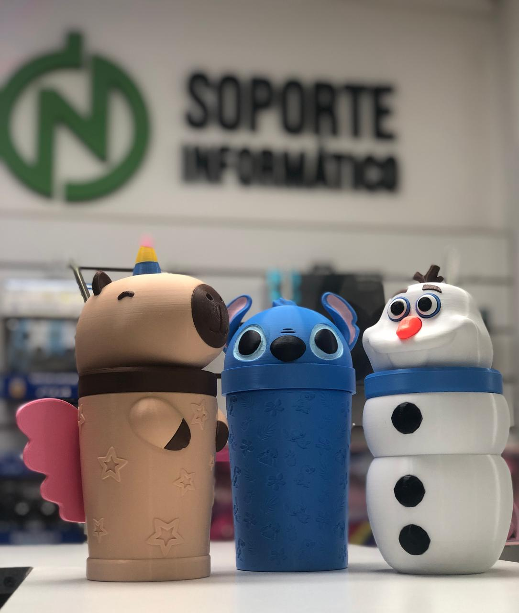
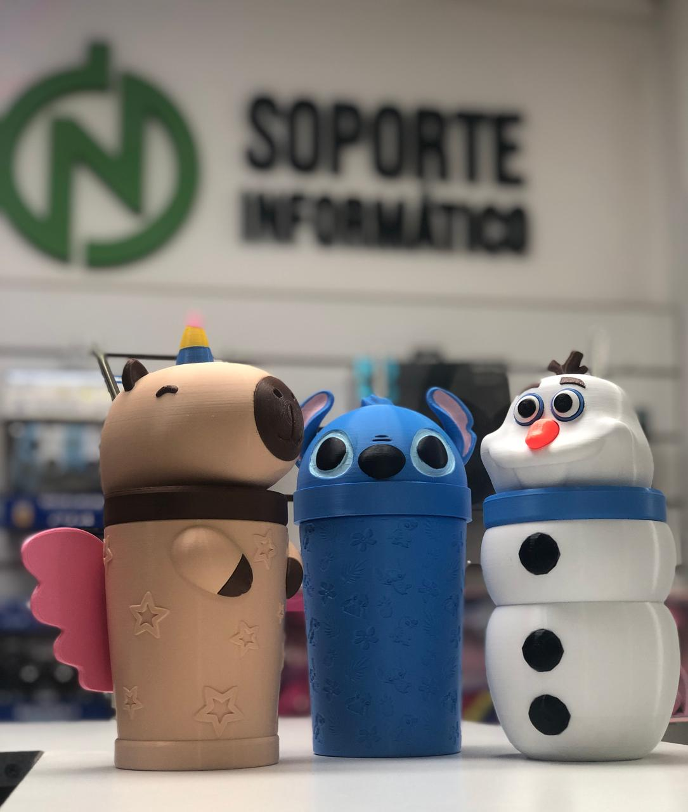
 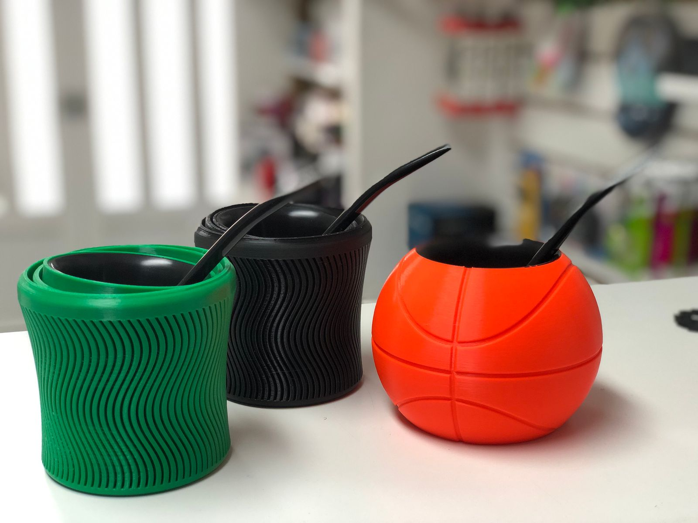
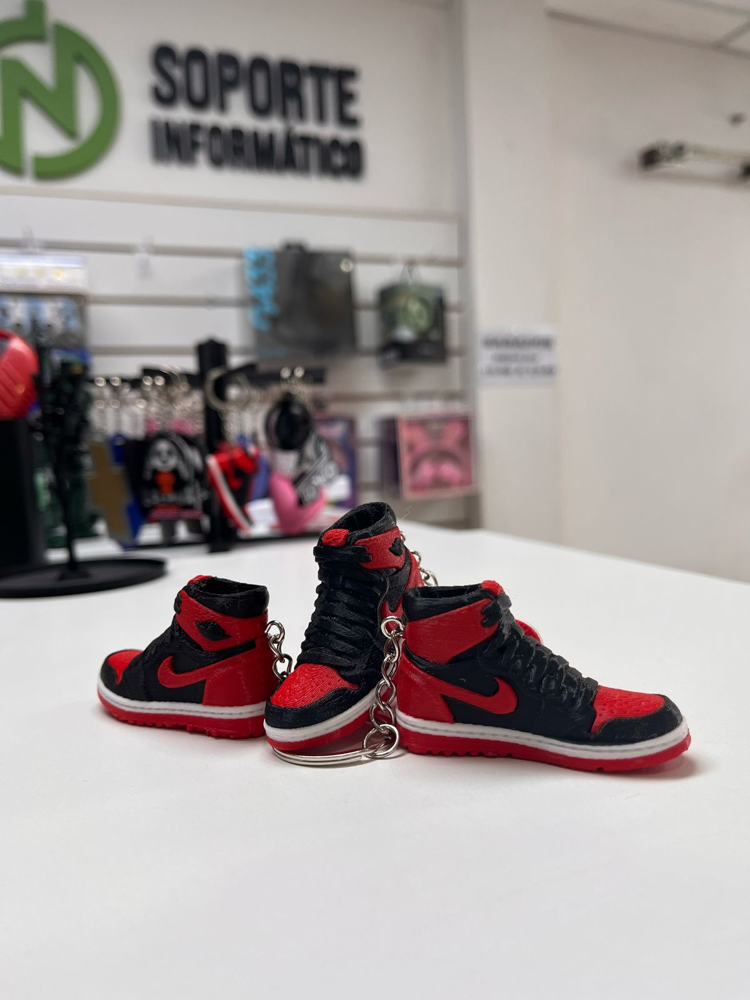
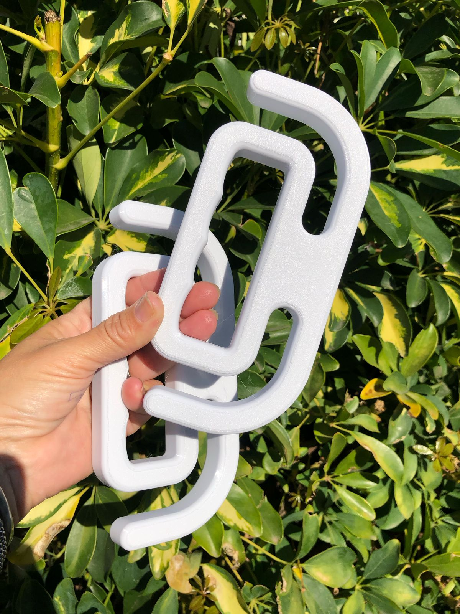
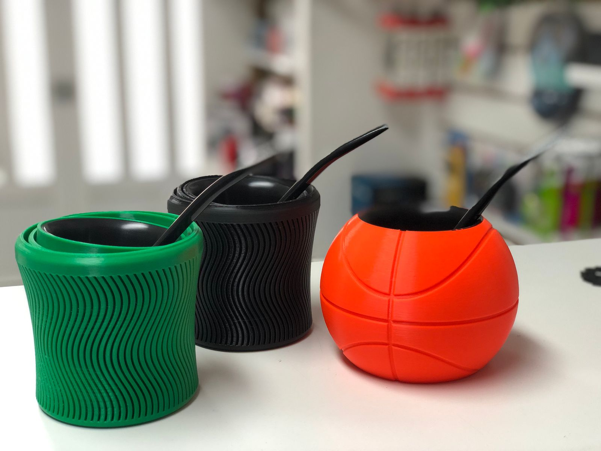
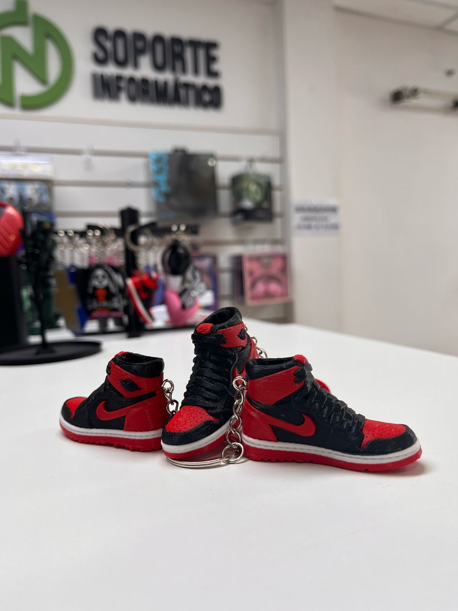
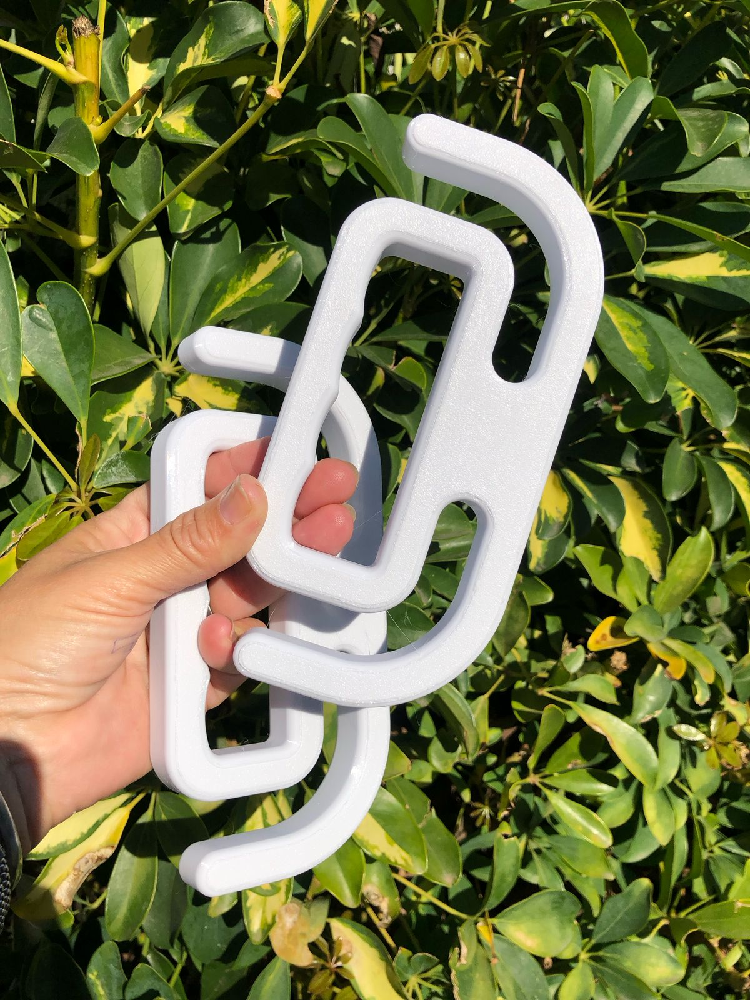